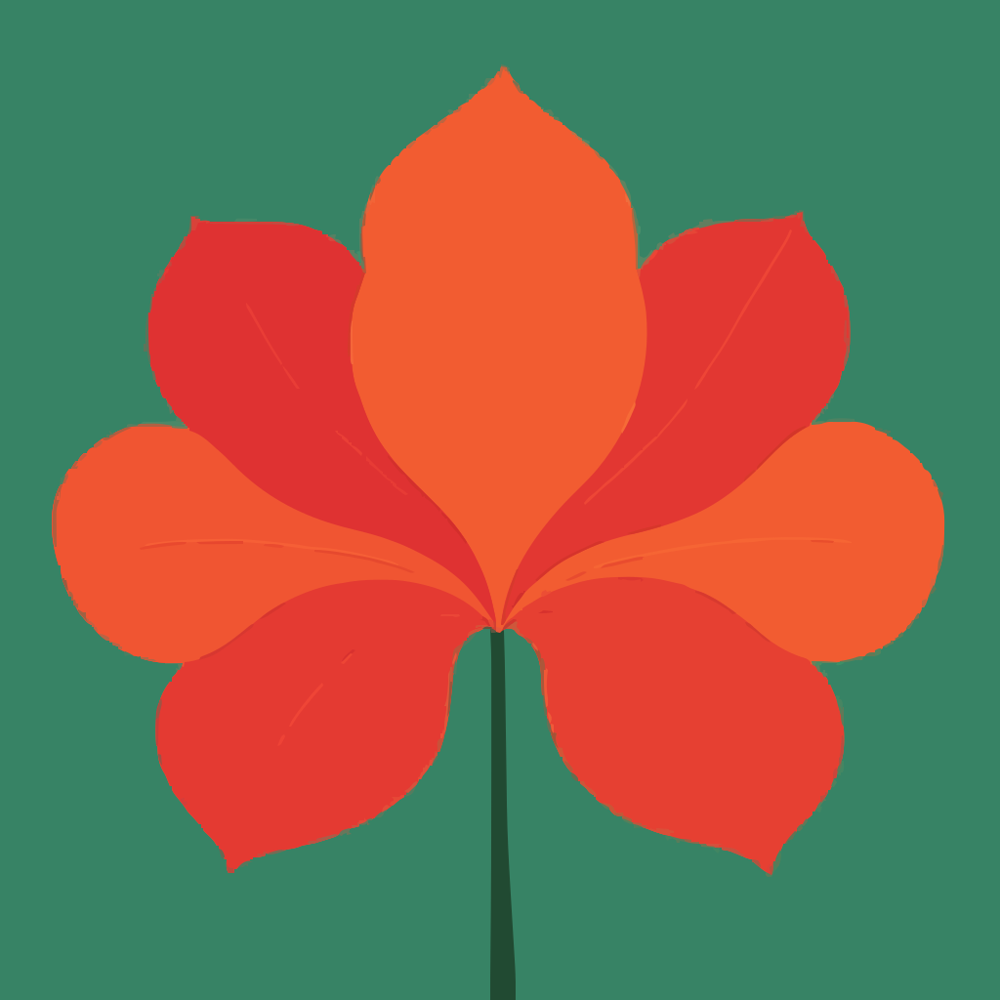

筑居思
回归生活本源的思考与创造 | Creating Living Thinking

筑居思 · 主理人
我是 Qianny，筑居思主理人。
让有灵魂的物，重新进入流动的世界。
筑居思是一间以旧物与共同创作为主线的生活方式事务所：组织小型线下工作坊，借你自带的一件旧物，在三小时左右一起动手改造；带走署名作品，留下文字档案。
向同事或合作方介绍时，可以这样说：「借一件旧物，在几小时里一起做完——不是卖成品手工，也不是心理咨询。」
2025 年 7 月，我曾想把筑居思做成线上的「小报童」式付费专栏；写完后发现，我更擅长面对面共创——于是路线转向线下创作共创。详情见 关于页 · 缘起。
我常在江浙沪一带流动；若你同路，欢迎联络与共创。
如果我的故事或思考让你感到一丝熟悉，并好奇我们之间是否会产生更有趣的化学反应，我为你准备了一封更正式的邀请。
阅读「一次共创的邀请」🔨 筑 · 创造
筑 · 创造｜造物主线
进行中 · 概况这一带同时在做几件事：可穿戴方向的实验与样机、以旧衣和材料为主的 Remake，以及和大家一起动手的小型工作坊。更细的专题与案例会陆续补全；下面两条，一条是已办的内测工作坊，一条是春天的公开演示记录。
2025年12月｜Remake 线下工作坊（内测）
已举办 · 回顾冬日里一场小范围线下场：参与者自带旧衣，在现场动手做 Remake。那次内测让我更清楚——大家更愿意亲手参与重塑，而不只是等着被代劳。
近期探索｜404 Demo Night 与硬件样机
2026年4月 · 已展示 · 阶段性记录2026 年 4 月前后，在「灵感买家俱乐部」404 Demo Night 上展示了一件可穿戴方向的硬件样机，并配合当时为演示准备的说明材料；同期也在摸索电子模块与布料怎样缝得稳、用得久。那是一次阶段性亮相，重在当面交流在场感受与工艺上的取舍；样机与工坊影像见长文正文。
流动档案馆｜优牙专场 · 十册故事（文字版）
2026年5月 · 文字入档 · 影像静待更新2026 年 5 月「借物修心」十一位共同创作者、十册故事（No.01–No.10）：每则导语 + 可展开正文，点进可看完整作品介绍；右上角可随机 · 抽一抽。照片二期补档。
2026年6月6日—7日｜安吉 · 指尖剧场（文字碎片）
安高若 · 不急运动会 · 现场笔记竹篾串联回收织物，集体做包；铁狗赛、可持续匠人、三角饭店与嫩笋——以场次页 + 文字碎片留痕，不做合订本档案。